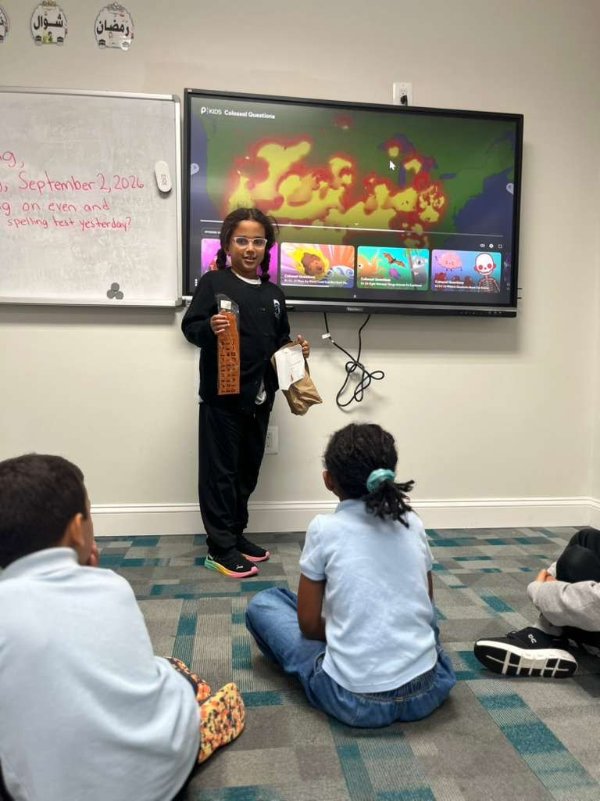

Chantilly Campus
Home to our kindergarten through Grade 5 classes, with a fenced play area, a playground and a soccer field so younger children have room to run.
42851 Smallwood Terrace, Chantilly, VA 20152

- KG – G5Grades
- PYPIB Primary Years Programme
- 10:1Students for every teacher
- 4Outdoor play areas
Inside the Chantilly Campus
Where our youngest students spend the school day.

The Building
A secure building made for young children, with locked doors, a fenced play area and on-site security.

Classrooms
Bright classrooms where young children read, draw and work together, with a homeroom teacher who knows every child.
Explore Primary Years
Celebrating Students
IB Learner Profile assemblies where we celebrate students for being principled, caring and open-minded.

Room to Run
A playground, a soccer field and basketball, volleyball and badminton courts for recess, play and Physical Education.
Plan Your Visit
- Address42851 Smallwood Terrace, Chantilly, VA 20152Open in Google Maps ↗
- GradesKindergarten – Grade 5 · Primary Years Programme (IB candidate)
- School day8:00am – 3:00pm[Drop-off and pick-up times]
- Campus toursSaturdays, 2–4 PM · about 45 minutes
- After schoolExtended Care until 5:30 PMExtended Care ›
Getting Here
Easy to reach from Loudoun and Fairfax counties. Transportation reaches families in more than 10 cities and regions, and a complimentary shuttle runs between our campuses for siblings and families who live near the other campus.
Moving Up to Ashburn
From Grade 6, students continue at our Ashburn campus, a building of their own for middle and high school.
See the Ashburn Campus ›See the Chantilly Campus in Person
Tours run Saturdays, 2–4 PM, and take about 45 minutes.